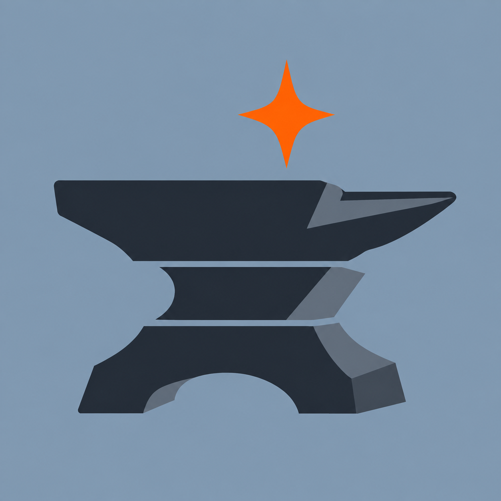

StackAnvil Javadocs
API documentation for the four fully patched projects in stack-v0.3.11.
Projects
| Project | Source folder |
|---|---|
| ViaBedrock | viabedrock |
| ViaFabricPlus Bedrock add-on | viafabricplus-bedrock |
| CubeConverter | cubeconverter |
| ViaProxy | viaproxy |